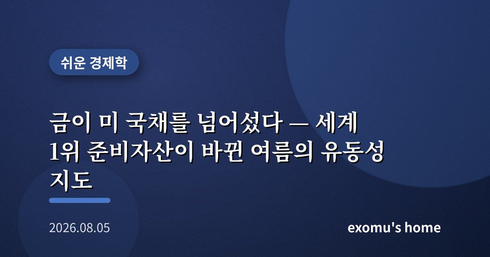
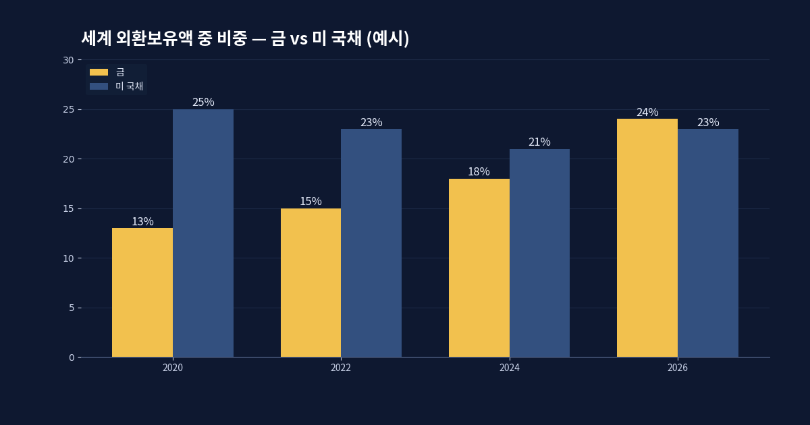
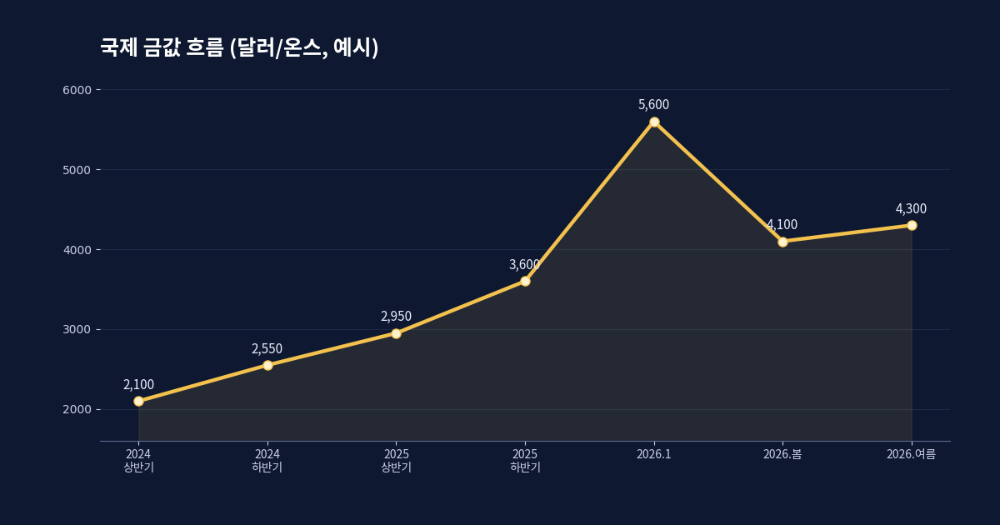
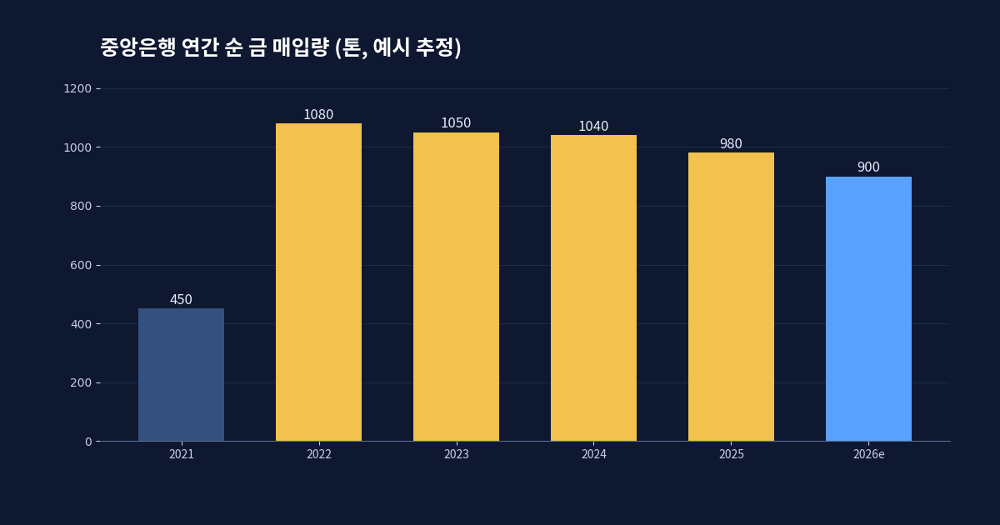
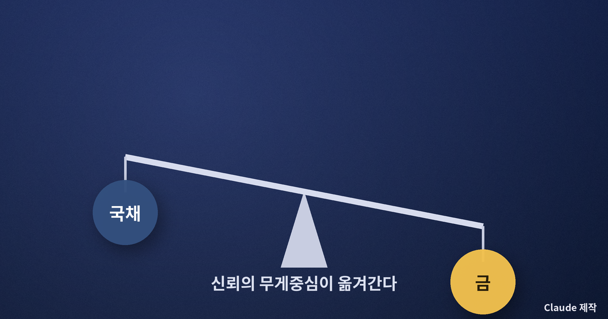

금이 미 국채를 넘어섰다 — 세계 1위 준비자산이 바뀐 여름의 유동성 지도

1996년 이후 처음 있는 일
2026년 여름, 조용하지만 상징적인 사건이 하나 지나갔다. 전 세계 중앙은행이 보유한 자산 가운데 금의 가치가 미국 국채를 넘어서면서, 금이 다시 세계 1위 준비자산 자리에 올랐다. 1996년 이후 30년 만의 역전이다. 전 세계 금 보유의 총 가치는 4조 달러 안팎으로 추산된다. 준비자산이란 각국이 위기 때 꺼내 쓰려고 쌓아 두는 비상금 같은 것이다. 그 비상금의 1등이 바뀌었다는 사실은, 단순한 가격 이야기가 아니라 세계가 무엇을 가장 믿을 만한 것으로 여기는지에 대한 답이 달라졌다는 뜻이다.
숫자만 보면 밋밋하지만, 이 역전은 지난 몇 년간 쌓인 흐름의 결과다. 금값은 2026년 1월 말 한때 온스당 5,600달러 부근까지 치솟으며 사상 최고치를 새로 썼고, 이후 달러가 강해진 봄에 한 차례 크게 밀렸다가 다시 높은 자리를 지키고 있다. 가격이 오른 것도 있지만, 더 중요한 건 각국이 몇 년째 금을 사 모으는 쪽으로 방향을 틀었다는 점이다.

왜 지금 금인가 — 세 가지 배경
첫째는 물가다. 2026년의 물가는 좀처럼 목표치로 내려오지 않았고, 근원 물가가 다시 고개를 든 국면도 있었다. 돈의 가치가 조금씩 깎이는 시대에는, 이자를 주지 않지만 스스로 녹지 않는 금이 상대적으로 매력적으로 보인다. 둘째는 지정학이다. 한 나라의 국채는 결국 그 나라 정부의 약속이다. 갈등이 잦아지고 제재가 무기가 되는 시대에는, 누군가의 약속보다 금고 안의 금덩이가 더 안전하게 느껴진다. 셋째는 분산이다. 달러 자산에 지나치게 쏠렸다고 느낀 신흥국 중앙은행들이 위험을 나누기 위해 금 비중을 꾸준히 늘려 왔다.
이 세 가지는 서로 얽혀 있다. 물가가 신뢰를 갉아먹고, 지정학이 특정 통화의 안전성에 물음표를 붙이고, 그 둘이 합쳐져 분산의 필요를 키운다. 금은 이 세 불안이 만나는 지점에 놓여 있는 자산이다. 이자를 한 푼도 주지 않는데도 사람들이 사 모으는 이유는, 금이 수익이 아니라 보험이기 때문이다.

달러라는 기축의 미세한 균열
오해는 말아야 한다. 금이 1위가 되었다고 해서 달러 시대가 끝난 것은 아니다. 세계 무역과 결제, 자금 조달의 대부분은 여전히 달러로 이루어진다. 다만 준비자산 1위가 바뀌었다는 것은, 달러 하나에 기대던 세계가 조금씩 다리를 여러 개로 늘리고 있다는 신호로 읽을 수 있다. 미국의 재정 적자가 눈덩이처럼 불어나고, 국채 발행이 계속 늘어나는 상황에서, 국채를 무한정 안전자산으로만 볼 수 있느냐는 물음이 조용히 번지고 있다.
이런 변화는 하루아침에 시장을 뒤엎지 않는다. 그러나 큰 배가 방향을 틀 때 처음에는 아무도 느끼지 못하듯, 준비자산의 구성 변화는 몇 년에 걸쳐 유동성의 물길을 서서히 바꾼다. 금으로 흘러 들어간 돈은 그만큼 다른 자산에서 빠져나온 돈이기도 하다. 어디서 나와 어디로 가는지를 읽는 일이, 지금 국면에서 가장 실용적인 감각이다.

개인의 자산에는 무엇을 뜻하나
중앙은행의 선택을 개인이 그대로 따라 할 필요는 없다. 다만 배울 점은 태도다. 그들은 금값이 오를 것 같아서가 아니라, 어느 한 자산에 전부를 걸지 않으려고 금을 산다. 개인에게도 같은 원리가 통한다. 예금, 주식, 그리고 소액의 실물·금 관련 자산처럼 성격이 다른 바구니에 나눠 담아 두면, 한 바구니가 흔들려도 전체가 무너지지 않는다. 특히 금은 주식과 다른 방향으로 움직일 때가 많아, 폭락장에서 완충 역할을 하곤 한다.
물론 금에도 약점이 있다. 이자도 배당도 없고, 달러가 강해지는 국면에서는 오히려 손해를 볼 수 있으며, 이미 사상 최고가 부근이라는 점에서 추격 매수는 위험하다. 그래서 금이 1위가 되었으니 지금 사자는 결론은 성급하다. 오히려 이 사건이 알려 주는 것은, 세계가 신뢰의 무게중심을 여러 곳으로 나누고 있다는 사실이며, 나 역시 한 자산에 마음을 몰아주지 않는 편이 안전하다는 오래된 교훈이다.

금이 국채를 넘어선 여름은, 어느 자산이 이겼다는 승부의 이야기가 아니다. 그것은 세계가 무엇을 믿을 것인가라는 질문을 다시 던지기 시작했다는 신호다. 그리고 그 질문 앞에서 가장 흔들리지 않는 답은 언제나 하나였다. 한곳에 전부를 걸지 않는 것. 준비자산의 지도가 바뀌는 것을 지켜보며, 내 자산의 지도도 한쪽으로 기울어 있지 않은지 점검해 볼 때다.